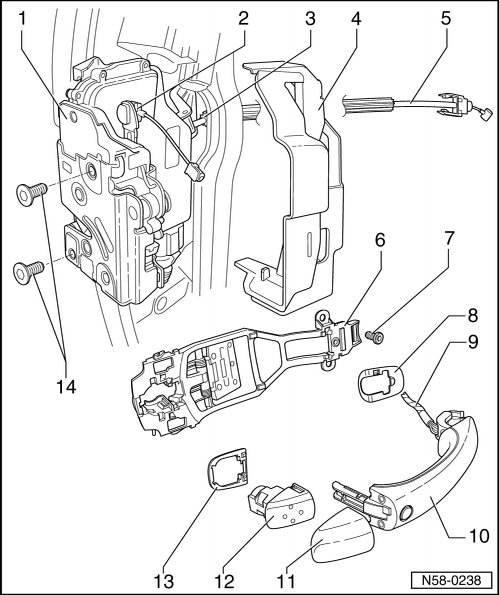

Rear Door Overview
Rear Door
Door Handle and Door Lock Assembly Overview

1 Door lock
• Door lock can only be removed in conjunction with subframe.
• Removing and Installing, refer to --> [ Door Lock ] Rear Door
2 Release
• Lock release
3 Angle bracket
• Bolted and riveted to door lock.
• Does not belong to packaged contents of door lock
• Must be replaced every time it is removed.
4 Cap
• Does not belong to packaged contents of door lock
5 Release
• Lock release
6 Mounting bracket
• Removing:
• Door handle, lock cylinder housing and subframe are removed
- Remove the bolt - 7 -, slide the mounting bracket back slightly and remove it from the door.
7 Bolt
• 6 Nm
8 Backing
9 Wiring for touch sensor (Kessy)
• G 417 Left rear outside door handle touch sensor, refer to --> [ Door Handle with Cable Routing (Kessy) ] Door Handle With Cable Routing (Kessy)
• G 418 Right rear outside door handle touch sensor, refer to --> [ Door Handle with Cable Routing (Kessy) ] Door Handle With Cable Routing (Kessy)
10 Door handle
• Removing and Installing, refer to --> [ Door Handle ] Rear Door
• With cable routing (Kessy), refer to --> [ Door Handle with Cable Routing (Kessy) ] Door Handle With Cable Routing (Kessy)
11 Cap
• For the lock cylinder housing.
12 Lock cylinder housing
• Removing, refer to --> [ Lock Cylinder Housing ] Rear Door
• Lock cylinder is not supplied as individual parts.
13 Backing
14 Bolt
• 20 Nm